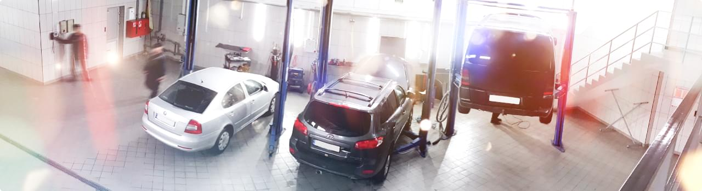

Наша місія — надавати
професійні рішення для звичного ритму життя людей,
які
цінують автокомфорт та
прагнуть жити на повну.
Компанія Restart працює на ринку стартерів та генераторів понад 20 років.
Паралельно з гуртовими продажами агрегатів та
компонентів на всій території
України, компанія розвиває
мережу сервісно-технічних
центрів у Рівному та Луцьку.

Паралельно з гуртовими продажами агрегатів та
компонентів на всій території
України, компанія розвиває
мережу сервісно-технічних
центрів у Рівному та Луцьку.
Сьогодні в Компанії є 7 діючих сервісно-технічних центрів,
що надають такі послуги:
- • діагностика, профілактика та ремонт стартерів та генераторів;
- • заміна компонентів агрегатів;
- • діагностика системи кондиціонування азотом;
- • заправка та дозаправка кондиціонера фреоном;
- • ремонт системи кондиціонування;
Компанія Restart (Рестарт) — це справжні професіонали на ринку стартерів та генераторів.
У нас представлений широкий асортимент запчастин та комплектуючих для вантажних та легкових
авто,
сільськогосподарських машин, водно-моторної техніки, а також мотоциклів та промислового сектору
ринку.
Наш асортимент запчастин налічує:
- • стартери та генератори
- • комплектуючі
- • обладнання для діагностики та ремонту генераторів та стартерів в асортименті
- • деталі для системи кондиціонування
Наші переваги:
- • формування запасів популярних запчастин та їх наявність на наших складах
- • кваліфіковане та швидке обслуговування
- • допомога при виборі запчастин
- • досвідчені майстри сервісу
- • сучасне обладнання та новітні інструменти
- • гарантія якості